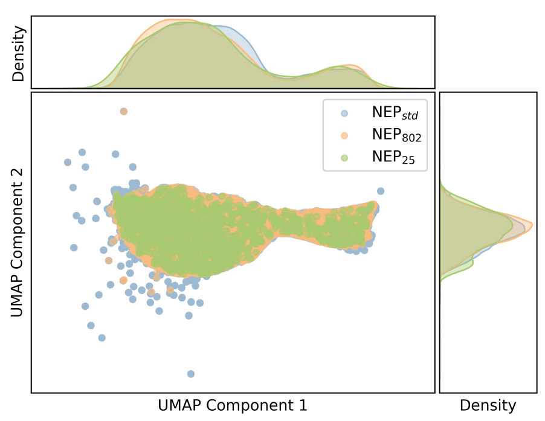

Script Location: Scripts/calculators/
Overview
The calculator module can be read as four groups:
- Trajectory properties: compute time-dependent quantities such as MSD and ionic conductivity from GPUMD or extxyz trajectories, and calculate X-ray diffraction from extxyz trajectories;
- Phonon properties: calculate phonon force constants and band structures from a primitive cell, a NEP model, and a
QPOINTSpath; - NEP-assisted calculations: use a NEP model to predict energies/forces/stresses, extract descriptors, calculate DOAS, run NEB, or minimize structures;
- Polar-material analysis: build neighbor lists and calculate local displacement, averaged structures, octahedral tilt, and local polarization for perovskite or polar systems.
If you are not sure about the required arguments, start from the interactive menu to see the prompt. If the arguments are already clear, use gpumdkit.sh -calc ... directly for calculators that provide a CLI; XRD and phonon calculations are intentionally interactive only.
| Task | Command | Main Input |
|---|---|---|
| Ionic conductivity | gpumdkit.sh -calc ionic-cond <element> <charge> |
msd.out, thermo.out, model.xyz |
| MSD from trajectory | gpumdkit.sh -calc msd <trajectory.xyz> <element> <dt_fs> |
extxyz trajectory |
| X-ray diffraction | 4 → 413 (interactive only) |
extxyz trajectory with Lattice/pbc |
| Phonon band structure | 4 → 414 (interactive only) |
PRIMCELL.vasp, nep.txt, QPOINTS |
| NEP prediction | gpumdkit.sh -calc nep <input.xyz> <output.xyz> <nep.txt> |
extxyz + NEP model |
| NEP prediction outputs | gpumdkit.sh -prediction <input.xyz> <nep.txt> [workers] |
labeled extxyz + NEP model |
| DPA prediction outputs | gpumdkit.sh -prediction_dpa <input.xyz> <dpa_model> |
labeled extxyz + DeepMD DPA model |
| NEP descriptors | gpumdkit.sh -calc des <input.xyz> <output.npy> <nep.txt> <element> |
extxyz + NEP model |
| DOAS | gpumdkit.sh -calc doas <input.xyz> <nep.txt> <output.txt> |
extxyz + NEP model |
| NEB | gpumdkit.sh -calc neb <initial.xyz> <final.xyz> <n_images> <nep.txt> |
initial/final structures |
| Minimization | gpumdkit.sh -calc minimize <structure> <nep.txt> [fmax] [max_steps] |
structure + NEP model |
| Neighbor list | gpumdkit.sh -calc nlist ... |
see Polar Material Analysis |
| Displacement | gpumdkit.sh -calc disp ... |
see Polar Material Analysis |
| Average structure | gpumdkit.sh -calc avg-struct ... |
see Polar Material Analysis |
| Octahedral tilt | gpumdkit.sh -calc oct-tilt ... |
see Polar Material Analysis |
| ABO3 polarization | gpumdkit.sh -calc pol-abo3 ... |
see Polar Material Analysis |
gpumdkit.sh -calc -h prints every calculator command. In interactive mode, run gpumdkit.sh and choose 4) Calculators.
Show the full menu
+----------------------------------------------------------+
| CALCULATOR TOOLS |
+----------------------------------------------------------+
| 401) Calc ionic conductivity |
| 402) Calc properties by nep |
| 403) Calc descriptors of specific elements |
| 404) Calc density of atomistic states (DOAS) |
| 405) Calc nudged elastic band (NEB) by nep |
| 406) Build neighbor list |
| 407) Calc displacement from trajectory |
| 408) Calc averaged structure |
| 409) Calc octahedral tilt |
| 410) Calc polarization for ABO3 |
| 411) Minimize structure by nep |
| 412) Calc mean square displacement (MSD) from trajectory |
| 413) Calc XRD from extxyz trajectory |
| 414) Calc phonon band structure |
+----------------------------------------------------------+
| 000) Return to the main menu |
+----------------------------------------------------------+
Input the function number:Ionic Conductivity
calc_ion_conductivity.py calculates ionic diffusivity and conductivity from msd.out.
Required and Optional Files
| File | Role |
|---|---|
msd.out |
Required MSD data |
thermo.out |
Optional, used for automatic temperature detection |
model.xyz |
Optional, used for volume and ion-count detection |
run.in |
Optional, used to detect replication |
Usage
gpumdkit.sh -calc ionic-cond Li 1| Argument | What it identifies | Check before running |
|---|---|---|
element |
the mobile species whose MSD is analysed | The symbol must match the species represented in msd.out and model.xyz. |
charge |
the charge magnitude used in the Nernst–Einstein conversion | Supply the charge definition appropriate to your system. The implementation uses its square, so changing only the sign does not change the reported conductivity. |
The example Li 1 is only an argument-format example; it is not a default
choice for every system. The current implementation fits the middle 40–80% of
the available MSD points. Inspect the MSD curve and its convergence before
using the resulting diffusion coefficient or conductivity in an interpretation.
The calculator reads time and MSD_x/y/z from columns 1–4. The element
argument counts ions; it does not select MSD columns. For all_groups output,
extract the target group's time and MSD columns before running. Use an integer
charge in units of the elementary charge. The result is Nernst–Einstein
conductivity and does not include inter-ion displacement correlations.
From interactive mode, choose 401. You will see:
Input <element> <charge> (eg. Li 1)
------------>>If automatic files are missing, the script will ask for temperature, volume, and ion count interactively.
Interactive prompts in manual mode look like:
Files 'thermo.out' and 'model.xyz' are not found.
Please provide the following values:
--------------------------->
Enter average temperature (in K):
Enter system volume (in A^3):
Enter number of ions:Example Output
Diffusivity (D):
D_x: 4.153e-07 cm^2/s
D_y: 4.174e-07 cm^2/s
D_z: 2.610e-07 cm^2/s
D_total: 3.646e-07 cm^2/s
------------------------------
Ionic Conductivity:
Sigma_x: 2.576e-02 mS/cm
Sigma_y: 2.589e-02 mS/cm
Sigma_z: 1.619e-02 mS/cm
Sigma_total: 2.261e-02 mS/cmMean Square Displacement
calc_msd.py computes MSD directly from an extxyz trajectory.
gpumdkit.sh -calc msd dump.xyz Li 10
gpumdkit.sh -calc msd dump.xyz Li 10 5000Use a fixed-cell trajectory with stable atom order and verified unwrapped
coordinates in the pos field. The script reads pos and the first frame's
cell; it does not use a separate unwrapped_position property. Its automatic
wrapping check is not sufficient to validate wrapped trajectories, and its
axis-wise unwrapping does not handle general tilted or changing cells.
The command overwrites msd.out in the current directory.
From interactive mode, choose 412. You will see:
Input <extxyz_file> <element_symbol> <dt_fs> [max_corr_steps]
Optional argument: max_corr_steps (default: frame number)
Example: dump.xyz Li 10
------------>>Arguments:
| Argument | Meaning |
|---|---|
dump.xyz |
input trajectory |
Li |
target mobile species |
10 |
time interval between frames, in fs |
5000 |
optional maximum correlation steps |
max_corr_steps limits the largest time lag included in the correlation. If it
is omitted, the script uses the number of available frames. It changes the
calculation window, so select it from the length and sampling of your own
trajectory rather than copying a value from another system.
Output:
msd.out
calc_msd.py writes exactly four numeric columns to msd.out: Time(ps),
MSD_x, MSD_y, and MSD_z. This output can be plotted with -plt msd.
For comparison, GPUMD's native compute_msd writes a different msd.out. For
one selected group it contains seven columns: time, MSD_x/y/z, and
SDC_x/y/z; this layout is required by -plt sdc and -plt msd_sdc. When
all_groups or multiple groups are requested, GPUMD appends additional group
data, so do not assume that every msd.out has seven columns. The separate
GPUMD compute_sdc command writes sdc.out, which is used by -plt vac and
is not the input for the -plt sdc or -plt msd_sdc plotters.
You can then plot:
gpumdkit.sh -plt msd
X-ray Diffraction (XRD)
calc_xrd.py calculates and averages LAMMPS-compatible XRD intensities from
an extended XYZ trajectory. It is intentionally available through the
interactive menu only; no CLI flag is provided.
Choose 4) Calculators, then 413) Calc XRD from extxyz trajectory. The
Python page asks for the following values:
Input extended XYZ trajectory
Output XRD file
X-ray wavelength (Angstrom)
2theta range (degrees; min max)
Number of bins in this 2theta range
Elements to include (all or comma-separated) [all]
CPU workers (0 means automatic) [0]The bins always cover the selected 2theta interval. For example, a range of
10 60 with 500 bins produces 500 equal-width bins from 10 to 60 degrees;
there is no separate output-bin range.
Use all to include every atom, or enter element symbols such as Li or
Li,Cl. Element matching is case-insensitive. The default calculation uses
the input Lattice and pbc, standard LAMMPS scattering factors, and the
Lorentz-polarization factor. Orthogonal cells are supported; triclinic cells
are rejected because this calculator follows the current LAMMPS-compatible
mesh convention.
The output contains metadata headers followed by four columns:
| Column | Meaning |
|---|---|
Bin |
one-based histogram-bin index |
Coord |
center of the selected 2theta bin, in degrees |
Count |
averaged XRD intensity |
Count/Total |
intensity normalized by the total selected-range intensity |
Multiple CPU workers speed up long trajectories without changing the result.
Phonon Band Structure
calc_phonon.py calculates force constants with a NEP model and evaluates the
phonon band structure along the path defined in QPOINTS. It is available
through the interactive menu only:
gpumdkit.sh -> 4) Calculators -> 414) Calc phonon band structureThe Python page asks for the following values:
Primitive cell structure [PRIMCELL.vasp]
NEP model [nep.txt]
QPOINTS file [QPOINTS]
Supercell dimensions [1 1 1]
Displacement distance [0.015]
Output phonon file [phonon_NEP.dat]The QPOINTS file must use line-mode endpoint pairs. The number of points per
segment is read from its second line, and the resulting output rows are later
used by plt_phonon.py and plt_phonon_comp.py. Install phonopy before
running this calculator:
pip install phonopyNEP Property Prediction
calc_properties_with_nep.py calculates energy, force, and stress for structures using a NEP model.
Dependency: calorine
pip install calorinegpumdkit.sh -calc nep structures.xyz predictions.xyz nep.txtTip: Before prediction, you may want to clean the extxyz metadata:
gpumdkit.sh -clean_xyz train.xyz clean_train.xyzNEP Prediction Output Files
prediction.py evaluates every frame with Calorine's CPUNEP calculator and
writes the four prediction files used by NEP parity tools. The command derives
the output suffix from the input filename, so test.xyz produces
energy_test.out, force_test.out, stress_test.out, and virial_test.out in
the current directory.
# Single-core prediction (default)
gpumdkit.sh -prediction train.xyz nep.txt
# Use eight independent CPU workers
gpumdkit.sh -prediction train.xyz nep.txt 8Each row stores predicted values first and target values second. Energy is in
eV/atom, force in eV/Angstrom, stress in GPa, and virial in eV/atom. Stress and
virial tensors use the NEP order xx yy zz xy yz xz and the same NEP sign
convention: in these files stress = virial / volume, positive when
compressed. The stress= field of an input extxyz uses the opposite sign
(positive when stretched), so it is converted with virial = -stress * volume,
as NEP does. When only one of stress or virial is present in a frame, the other
target is derived this way. If neither target is present, both target columns contain NEP's
-1e6 sentinel. Energy and force targets are required. A tqdm progress bar
is shown during prediction.
The command requires calorine, ase, and tqdm:
pip install ase calorine tqdmDPA Prediction Output Files
prediction_dpa.py evaluates every frame in a labeled extended XYZ training
set with a DeepMD DPA model and writes energy_train.out, force_train.out,
virial_train.out, and stress_train.out in the current directory.
gpumdkit.sh -prediction_dpa train.xyz model.ckpt.ptThe output layout follows the NEP training prediction convention: predicted
values precede target values. Energy is in eV/atom, force is in eV/Angstrom,
stress is in GPa, and virial is in eV/atom. The command requires deepmd-kit
and numpy.
NEP Descriptors
calc_descriptors.py extracts NEP descriptors for a selected element.
gpumdkit.sh -calc des train.xyz descriptors.npy nep.txt LiUse cases:
- visualize chemical environments with PCA/UMAP;
- compare training and candidate structures;
- inspect whether new data expands descriptor space.
Plot descriptors with:
gpumdkit.sh -plt des pca descriptors.npy
gpumdkit.sh -plt des umap descriptors.npy
Density of Atomistic States
calc_doas.py calculates density of atomistic states (DOAS), following the idea proposed by Wang et al..
gpumdkit.sh -calc doas structures.xyz nep.txt doas.out
gpumdkit.sh -plt doas doas.out LiThe script:
- reads all structures;
- relaxes each structure with a NEP calculator;
- extracts per-atom energies;
- groups atomic energies by element;
- writes the grouped values to the output file.
For very large systems, running minimization and atomistic-energy extraction directly in GPUMD can be more efficient.

NEB with a NEP Model
gpumdkit.sh -calc neb initial.xyz final.xyz 9 nep.txtThis runs a NEB calculation with 9 intermediate images. During execution, the script asks how atoms should be fixed:
none: no atoms fixed;index: fix atoms by index;element: fix all atoms of one element;position: fix atoms inside a coordinate range.
Structure Minimization
calc_minimize.py minimizes a structure using a NEP model through calorine.
Dependency: calorine
pip install calorinegpumdkit.sh -calc minimize POSCAR nep.txt 0.01 1000Arguments:
| Argument | Meaning |
|---|---|
POSCAR |
input structure, POSCAR/CONTCAR or extxyz |
nep.txt |
NEP model |
0.01 |
optional force convergence threshold in eV/Ang |
1000 |
optional maximum optimization steps |
Output:
minimize.xyzminimize.log
RDF Calculation with OVITO
rdf_calculator_ovito.py calculates radial distribution function using OVITO's analysis tools.
Dependency: OVITO
pip install ovitoInput file: Structure file (single frame or trajectory)
python "${GPUMDkit_path}/Scripts/calculators/rdf_calculator_ovito.py" trajectory.xyz 6.0 400Parameters:
| Argument | Meaning |
|---|---|
trajectory.xyz |
Input structure file |
6.0 |
Maximum distance for RDF calculation (Å) |
400 |
Number of histogram bins |
Output: rdf.txt.
When possible, compute the RDF during the GPUMD run with compute_rdf instead; its rdf.out can be plotted with gpumdkit.sh -plt rdf, which does not read rdf.txt.
Ferroelectric and Polar Material Tools
Options 406–410 are for perovskite and polar-material analysis. They are commonly used to extract local structural information from MD trajectories before analyzing phase transitions, domain patterns, or polarization textures.
This page only gives a quick index for these scripts because they are usually used together. For full workflows and argument details, see Polar Material Analysis.
| Menu | CLI subcommand | Purpose | Details |
|---|---|---|---|
406 |
gpumdkit.sh -calc nlist ... |
Build neighbor lists between selected center and neighbor atoms | Polar Material Analysis |
407 |
gpumdkit.sh -calc disp ... |
Calculate local displacement from a trajectory and neighbor list | Polar Material Analysis |
408 |
gpumdkit.sh -calc avg-struct ... |
Calculate an averaged structure from a trajectory | Polar Material Analysis |
409 |
gpumdkit.sh -calc oct-tilt ... |
Calculate octahedral tilt angles | Polar Material Analysis |
410 |
gpumdkit.sh -calc pol-abo3 ... |
Estimate local ABO3 polarization from Born effective charges | Polar Material Analysis |
Some scripts require ferrodispcalc:
pip3 install git+https://github.com/MoseyQAQ/ferrodispcalc.gitA typical sequence is to build neighbor lists with nlist, then reuse those lists for displacement, tilt, or polarization calculations. For averaged structures, you can start directly from the trajectory and use the length tolerance to control which frames are included.